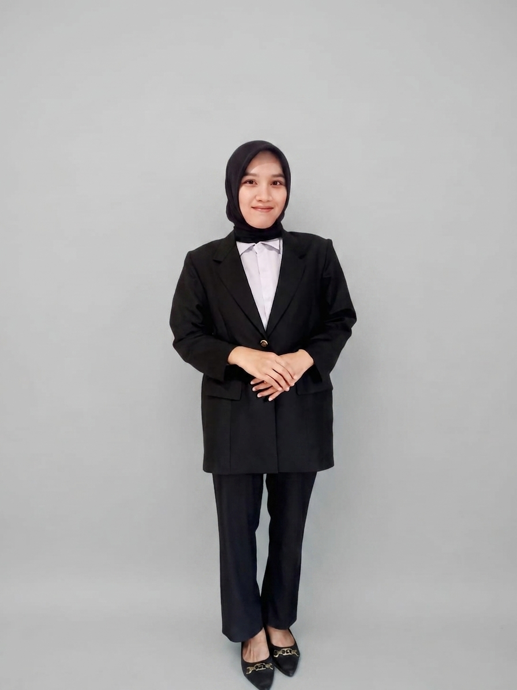
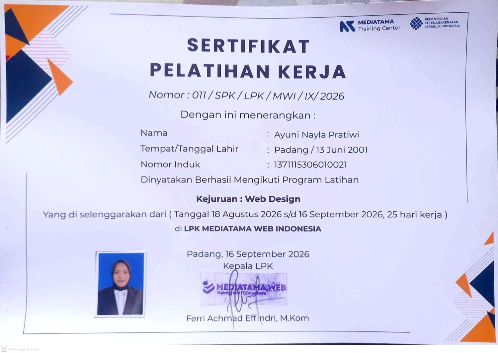
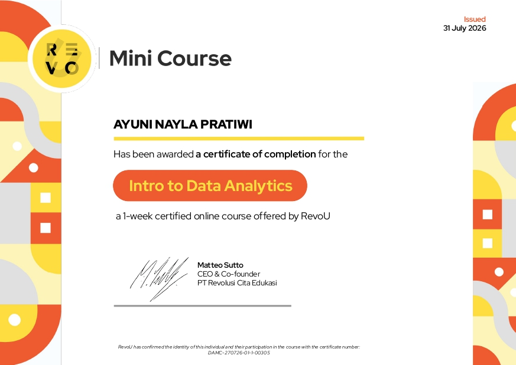
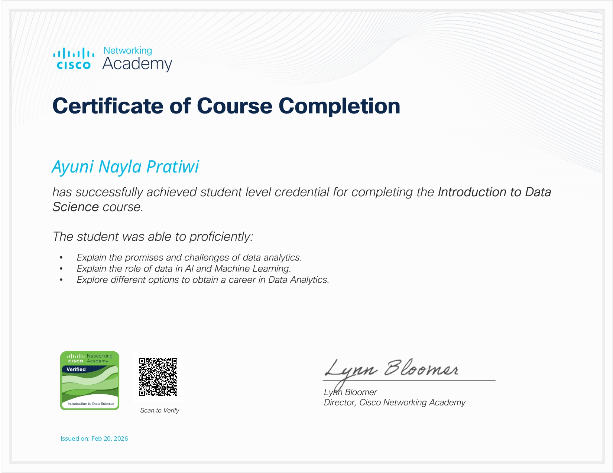

Ayuni Nayla Pratiwi, S.Kom Teknik Informatika
Halo! Saya Ayuni Nayla Pratiwi, S.Kom, fresh graduate Teknik Informatika yang tertarik pada pengembangan web, pengolahan data, dan pengembangan sistem. Saya senang mempelajari teknologi baru dan menerapkannya melalui berbagai proyek.

Fresh Graduate yang Suka Membangun dan Mempelajari Teknologi
"Saya percaya proyek yang baik dimulai dari memahami masalah, mengolah informasi dengan teliti, lalu membangun solusi yang sederhana dan dapat digunakan."
Membangun Solusi IT melalui Proyek Web, Data, dan Sistem
Saya merupakan lulusan baru S1 Teknik Informatika dari Institut Teknologi Padang yang lulus pada Februari 2026 dengan IPK 3,54. Selama kuliah, saya mengerjakan berbagai proyek yang menggabungkan pemrograman, basis data, pengolahan data, dan pengembangan aplikasi.
Saya memiliki ketertarikan pada Web Development, Data Analysis, dan System Development. Saya terbiasa menggunakan Python, PHP, JavaScript, MySQL, Laravel, Flask, serta tools seperti QGIS dan Microsoft Office. Saya juga senang belajar teknologi baru dan bekerja secara mandiri maupun dalam tim.
Pengembangan Aplikasi
Membangun aplikasi web dengan Laravel, PHP, JavaScript, MySQL, serta Flask untuk kebutuhan proyek.
Data & Analisis
Mengolah, menganalisis, dan memvisualisasikan data menggunakan Python dan SQL serta mengembangkan proyek berbasis machine learning.
Keahlian yang Saya Gunakan
Keahlian yang saya kembangkan melalui perkuliahan, pelatihan, dan proyek pribadi.
Kemampuan Teknis
Tools & Kompetensi
Proyek yang Pernah Saya Kerjakan
Beberapa proyek yang saya kerjakan di bidang pengembangan web, pengolahan data, machine learning, dan pengembangan sistem.
Prediksi Perubahan Lahan Sawah
Aplikasi prediksi perubahan lahan sawah menggunakan MultiLayer Perceptron (MLP) dan data citra satelit dalam format GeoTIFF.
Shop Ayy
Aplikasi marketplace berbasis Laravel dengan produk, kategori, keranjang, pesanan, autentikasi, dan komunikasi pembeli dengan pemilik proyek.
GymPulse
Sistem manajemen membership gym dengan member, paket, kartu RFID, check-in, absensi, dashboard, dan log aktivitas.
Pendidikan, Organisasi & Pengalaman
S1 Teknik Informatika
Institut Teknologi Padang
Lulus Februari 2026 dengan IPK 3,54. Mempelajari pemrograman, basis data, analisis data, pengembangan sistem, serta mengerjakan proyek web dan machine learning.
Bendahara Umum
Majelis Permusyawaratan Mahasiswa (MPM)
Mengelola administrasi dan pencatatan keuangan organisasi, menyusun laporan, serta berkoordinasi dengan anggota dalam pelaksanaan kegiatan.
Kegiatan Organisasi & Kepanitiaan
Institut Teknologi Padang
Terlibat dalam kegiatan organisasi dan kepanitiaan, termasuk membantu pelaksanaan prosesi wisuda mahasiswa sebagai sekretaris.
Juara 2 KSM Kimia
Tingkat Kota Padang
Meraih Juara 2 Kompetisi Sains Madrasah (KSM) bidang Kimia tingkat Kota Padang saat menempuh pendidikan di MAN.
Pelatihan dan Sertifikasi yang Relevan
Beberapa pembelajaran dan pelatihan yang mendukung pengembangan kemampuan di bidang IT.

Lihat SertifikatJunior Web Programmer
Pelatihan yang mempelajari dasar pengembangan website dan penerapan framework untuk membangun aplikasi web.
- UI/UX dasar
- PHP & Laravel
- Pengembangan aplikasi web

Lihat SertifikatRevoU Mini Course — Intro to Data Analytics
Pembelajaran pengantar analisis data dan proses memahami data untuk menghasilkan insight yang dapat digunakan.
- Data Analytics
- Data Processing
- Data Interpretation

Lihat SertifikatCisco Networking Academy
Pembelajaran pengantar jaringan dan dasar data science melalui Cisco Networking Academy.
- Networking
- Introduction to Data Science
- Data Science Fundamentals